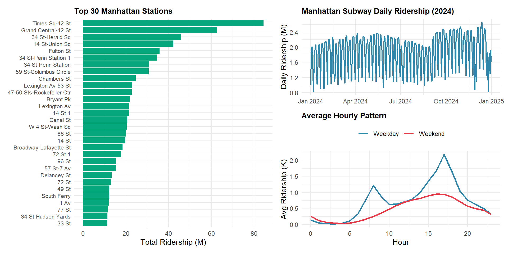
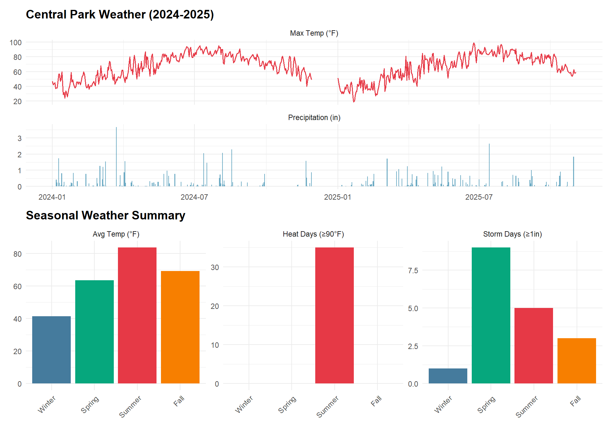
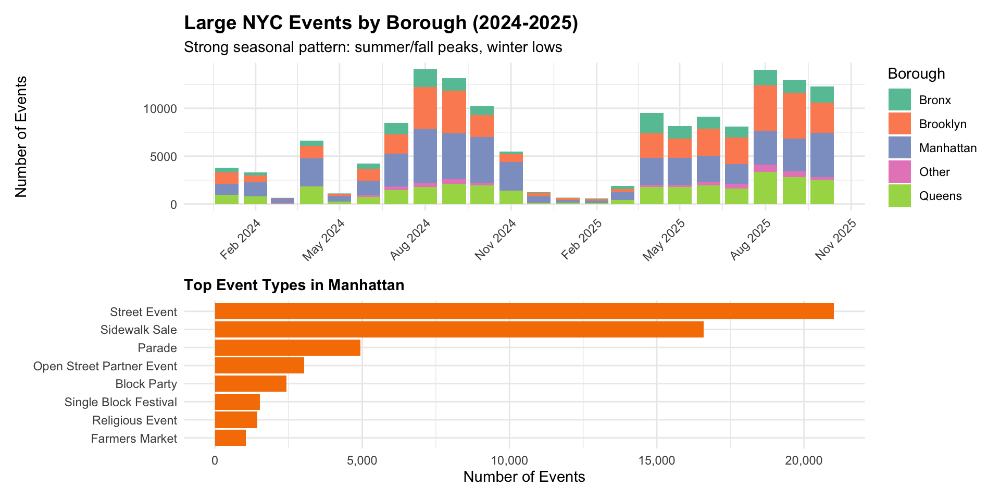

We acquired four datasets for analyzing weather and event impacts on Manhattan subway ridership (2024-2025). Each presented unique technical challenges that required creative solutions.
The Disaggregation Challenge:
The MTA ridership dataset is highly disaggregated to capture detailed fare collection patterns. Each hourly observation is broken down by:
This granularity creates a data explosion problem. For Manhattan’s 123 stations during a single week:
123 stations × 24 hours × 7 days × 11 fare categories × 2 payment methods
= 227,304 records per weekFor our complete 2024-2025 dataset (22 months ≈ 95 weeks), this would generate 21.6 million records—far exceeding the Socrata API’s 100,000-record pagination limit and creating unwieldy file sizes for analysis.
The Solution:
Since our research questions focus on total ridership rather
than fare type breakdowns, we leveraged the Socrata API’s server-side
aggregation capabilities. Using SUM() with
$group, we aggregated across all fare types and payment
methods before data transfer:
"$select" = "transit_timestamp, station_complex_id, station_complex,
borough, SUM(ridership) as total_ridership",
"$group" = "transit_timestamp, station_complex_id, station_complex, borough"This reduced records by 96% (from 21.6M to 1.92M), making monthly downloads feasible within API limits while preserving the station-hour granularity needed for our weather and event analyses.
This yielded 1,921,163 hourly observations across 123 Manhattan stations from 2024-01-01 to 2025-10-19.
# Daily trend (2024 only)
p_daily <- ridership %>%
filter(year(date) == 2024) %>%
group_by(date) %>%
summarize(total = sum(total_ridership, na.rm = TRUE) / 1e6, .groups = "drop") %>%
ggplot(aes(x = date, y = total)) +
geom_line(color = "#2E86AB", linewidth = 0.8) +
scale_y_continuous(labels = comma) +
labs(title = "Manhattan Subway Daily Ridership (2024)", x = NULL, y = "Daily Ridership (M)") +
theme(plot.title = element_text(size = 11))
# Hourly pattern
p_hourly <- ridership %>%
mutate(weekday_type = ifelse(wday(date) %in% 2:6, "Weekday", "Weekend")) %>%
group_by(hour, weekday_type) %>%
summarize(avg = mean(total_ridership, na.rm = TRUE) / 1000, .groups = "drop") %>%
ggplot(aes(x = hour, y = avg, color = weekday_type)) +
geom_line(linewidth = 1) +
scale_color_manual(values = c("Weekday" = "#2E86AB", "Weekend" = "#E63946")) +
labs(title = "Average Hourly Pattern", x = "Hour", y = "Avg Ridership (K)", color = NULL) +
theme(legend.position = "top", plot.title = element_text(size = 11))
# Top stations
p_top <- ridership %>%
group_by(station_complex) %>%
summarize(total = sum(total_ridership, na.rm = TRUE) / 1e6, .groups = "drop") %>%
slice_max(total, n = 30) %>%
arrange(total) %>% # Sort by total ascending for proper ordering
mutate(
# Truncate station names at first '(' for cleaner display
station_short = str_replace(station_complex, "\\s*\\(.*", ""),
# Make names unique by adding row number suffix if duplicates exist
station_short = make.unique(station_short, sep = " "),
# Use factor with levels in current order to preserve sorting
station_short = factor(station_short, levels = station_short)
) %>%
ggplot(aes(x = total, y = station_short)) +
geom_col(fill = "#06A77D") +
scale_x_continuous(labels = comma) +
labs(title = "Top 30 Manhattan Stations", x = "Total Ridership (M)", y = NULL) +
theme(plot.title = element_text(size = 11), axis.text.y = element_text(size = 8))
p_top | (p_daily / p_hourly)
The NOAA API requires an authentication token, which we obtained from NOAA’s token request page. After receiving the token via email, we downloaded daily weather data for Central Park (located in Manhattan) covering 2020-2025. This provides consistent weather measurements applicable to all Manhattan stations.
Note: December 2024 data is currently unavailable from the NOAA API, creating a gap in the weather time series. All other months in the 2024-2025 study period have complete daily observations.
weather <- read_csv('data/weather/central_park_weather_wide.csv', show_col_types = FALSE) %>%
mutate(date = as.Date(date))The dataset contains 1,642 daily observations with max temperature, precipitation, and snowfall.
# Temperature and precipitation time series
p_ts <- weather %>%
filter(year(date) >= 2024) %>%
select(date, TMAX, PRCP) %>%
pivot_longer(cols = -date, names_to = "metric", values_to = "value") %>%
mutate(metric = ifelse(metric == "TMAX", "Max Temp (°F)", "Precipitation (in)")) %>%
ggplot(aes(x = date, y = value)) +
geom_line(data = . %>% filter(metric == "Max Temp (°F)"), color = "#E63946", linewidth = 0.6) +
geom_col(data = . %>% filter(metric == "Precipitation (in)"), fill = "#2E86AB", alpha = 0.7) +
facet_wrap(~metric, ncol = 1, scales = "free_y") +
labs(title = "Central Park Weather (2024-2025)", x = NULL, y = NULL)
# Seasonal summary
weather_summary <- weather %>%
filter(year(date) >= 2024) %>%
mutate(
season = case_when(
month(date) %in% c(12, 1, 2) ~ "Winter",
month(date) %in% c(3, 4, 5) ~ "Spring",
month(date) %in% c(6, 7, 8) ~ "Summer",
month(date) %in% c(9, 10, 11) ~ "Fall"
),
season = factor(season, levels = c("Winter", "Spring", "Summer", "Fall")),
month_abbr = month(date, label = TRUE, abbr = TRUE)
)
# Seasonal aggregations
seasonal_weather <- weather_summary %>%
group_by(season) %>%
summarize(
`Avg Temp (°F)` = mean(TMAX, na.rm = TRUE),
`Storm Days (≥1in)` = sum(PRCP >= 1, na.rm = TRUE),
`Heat Days (≥90°F)` = sum(TMAX >= 90, na.rm = TRUE),
.groups = "drop"
) %>%
pivot_longer(cols = -season, names_to = "metric", values_to = "value")
# Plot seasonal summary
p_season <- seasonal_weather %>%
ggplot(aes(x = season, y = value)) +
geom_col(aes(fill = season)) +
scale_fill_manual(
values = c(
"Winter" = "#457B9D", "Spring" = "#06A77D", "Summer" = "#E63946", "Fall" = "#F77F00"
)
) +
facet_wrap(~metric, scales = "free", ncol = 3) +
labs(title = "Seasonal Weather Summary", x = NULL, y = NULL) +
theme(legend.position = "none", axis.text.x = element_text(angle = 45, hjust = 1))
p_ts / p_season
The NYC Permitted Event Information - Historical dataset (bkfu-528j) contains comprehensive event records but includes hundreds of thousands of small-scale activities (youth sports, film shoots, farmers markets) unlikely to significantly impact subway ridership.
Smart Filtering Strategy:
Since the dataset lacks attendance information, we filtered for large events (likely 100+ people) using event characteristics as proxies:
This filtering reduced from ~2 million total events to 149,524 large events across NYC.
events <- read_csv('data/events/nyc_large_events_2024_2025.csv', show_col_types = FALSE) %>%
mutate(start_date = as.Date(start_date_time), end_date = as.Date(end_date_time))
events_analysis <- events %>%
filter(!is.na(start_date)) %>%
mutate(
month = month(start_date, label = TRUE),
year_month = format(start_date, "%Y-%m"),
borough = case_when(
str_detect(tolower(event_borough), "manhattan") ~ "Manhattan",
str_detect(tolower(event_borough), "brooklyn") ~ "Brooklyn",
str_detect(tolower(event_borough), "queens") ~ "Queens",
str_detect(tolower(event_borough), "bronx") ~ "The Bronx",
str_detect(tolower(event_borough), "staten island") ~ "Staten Island",
TRUE ~ "Other"
)
)Successfully downloaded 149,524 large events (Jan 2024 - Oct 2025), including 53,977 in Manhattan.
# Monthly time series by borough
p_events_time <- events_analysis %>%
count(year_month, borough) %>%
mutate(date = as.Date(paste0(year_month, "-01"))) %>%
ggplot(aes(x = date, y = n, fill = borough)) +
geom_col() +
scale_fill_brewer(palette = "Set2") +
scale_x_date(date_labels = "%b %Y", date_breaks = "3 months") +
labs(title = "Large NYC Events by Borough (2024-2025)",
subtitle = "Strong seasonal pattern: summer/fall peaks, winter lows",
x = NULL, y = "Number of Events", fill = "Borough") +
theme(axis.text.x = element_text(angle = 45, hjust = 1), legend.position = "right")
# Top event types in Manhattan
p_event_types <- events_analysis %>%
filter(borough == "Manhattan", !is.na(event_type)) %>%
count(event_type, sort = TRUE) %>%
slice_max(n, n = 8) %>%
mutate(event_type = fct_reorder(event_type, n)) %>%
ggplot(aes(x = n, y = event_type)) +
geom_col(fill = "#F77F00") +
scale_x_continuous(labels = comma) +
labs(title = "Top Event Types in Manhattan", x = "Number of Events", y = NULL) +
theme(plot.title = element_text(size = 11))
p_events_time / p_event_types
Station coordinates are already embedded in the ridership data, so we extracted unique station complexes with coordinates directly from the ridership API rather than seeking a separate geospatial dataset.
stations <- read_csv('data/stations/mta_station_complexes.csv', show_col_types = FALSE)
manhattan_stations <- stations %>%
filter(borough == "Manhattan", !is.na(latitude), !is.na(longitude))We identified 476 unique station complexes across NYC, with 155 in Manhattan covering the entire borough from Battery Park to Inwood.
library(leaflet)
# Calculate total ridership by station
station_ridership <- ridership %>%
group_by(station_complex_id, station_complex) %>%
summarize(total_ridership = sum(total_ridership, na.rm = TRUE) / 1e6, .groups = "drop")
# Join with station coordinates
manhattan_stations_ridership <- manhattan_stations %>%
left_join(station_ridership, by = c("station_complex_id", "station_complex")) %>%
mutate(
longitude = as.numeric(longitude),
latitude = as.numeric(latitude)
) %>%
filter(!is.na(total_ridership))
# Create color palette for ridership
pal <- colorNumeric(
palette = "YlOrRd",
domain = log10(manhattan_stations_ridership$total_ridership)
)
# Create interactive map
leaflet(manhattan_stations_ridership) %>%
addProviderTiles(providers$CartoDB.Positron) %>%
addCircleMarkers(
lng = ~longitude,
lat = ~latitude,
radius = 5,
color = ~pal(log10(total_ridership)),
fillColor = ~pal(log10(total_ridership)),
fillOpacity = 0.8,
stroke = TRUE,
weight = 1,
opacity = 1,
popup = ~paste0(
"<strong>", str_replace(station_complex, "\\s*\\(.*", ""), "</strong><br/>",
"Total Ridership: ", format(round(total_ridership, 2), big.mark = ","), " million"
)
) %>%
addLegend(
position = "bottomright",
pal = pal,
values = ~log10(total_ridership),
title = "Ridership<br/>(Millions, log scale)",
labFormat = labelFormat(
transform = function(x) round(10^x, 1)
)
) %>%
setView(lng = -73.97, lat = 40.76, zoom = 12)Our integrated dataset provides comprehensive coverage of Manhattan subway ridership and its potential drivers:
Ridership: 1,921,163 hourly observations across 123 Manhattan stations (January 2024–October 2025), totaling over 1255 million rides. Peak stations like Times Square-42 St and Grand Central-42 St account for a substantial share of daily traffic.
Weather: 1,642 daily observations from Central Park (2020-2025), including 35 heat wave days (≥90°F) and 18 major storm events (≥1 inch precipitation) during our study period. Seasonal variation ranges from winter averages in the 30s-40s°F to summer peaks above 90°F.
Events: 149,524 large permitted events (parades, street fairs, athletic races) covering 2024-2025, with 53,977 in Manhattan. Events show strong seasonality (summer/fall peaks) and include major NYC happenings (NYC Marathon, street festivals, parades). Smart filtering excluded small-scale events (sports leagues, film shoots) to focus on activities likely to impact subway ridership.
Stations: Complete geospatial coverage of 155 Manhattan subway stations, enabling spatial analysis of ridership patterns and proximity-based event impacts.
All four datasets align temporally and spatially, providing comprehensive infrastructure for analyzing weather and event impacts on station-level subway ridership across Manhattan’s 22-month study period.
Download scripts: download_full_ridership_monthly.R,
download_historical_events_monthly.R,
download_noaa_weather.R